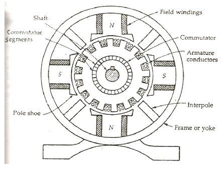
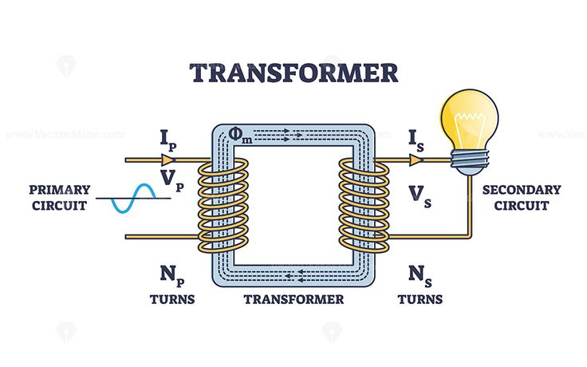

🔧 Electrical Machines
This section introduces machines that convert mechanical energy to electrical energy and vice versa — crucial in power generation, industrial motors, and transportation.
1️⃣ DC Machines
- DC Generator: Converts mechanical → electrical energy via electromagnetic induction
- DC Motor: Converts electrical → mechanical energy
- Key Parts: Armature, field winding, commutator, brushes
Equation: V = E + I_a R_a (generator) | T ∝ Φ I_a (motor torque)

2️⃣ Transformers
- Static devices with no moving parts
- Used for: voltage step-up/down in power systems
- Equation:
V₂/V₁ = N₂/N₁ and P₁ ≈ P₂

3️⃣ Synchronous Machines
- Synchronous Generator (Alternator): Main source of AC power
- Synchronous Motor: Operates at constant speed regardless of load
- Speed:
N_s = 120f/P
4️⃣ Induction Machines
- Most common AC motor in industry
- Squirrel Cage: Robust, low maintenance
- Slip: Difference between rotor and synchronous speed:
S = (N_s - N_r)/N_s
- Torque:
T ∝ sE₂²/R₂
🎞️ Animated Illustration
Rotor slip in induction motors:
🧠 Practice Questions
Q1: Why is slip essential in an induction motor?
Answer: Slip allows induction and torque production.
Q2: What is the EMF equation of a transformer?
Answer: E = 4.44 f N Φ
Q3: What are two advantages of synchronous motors?
Answer: Constant speed, power factor correction